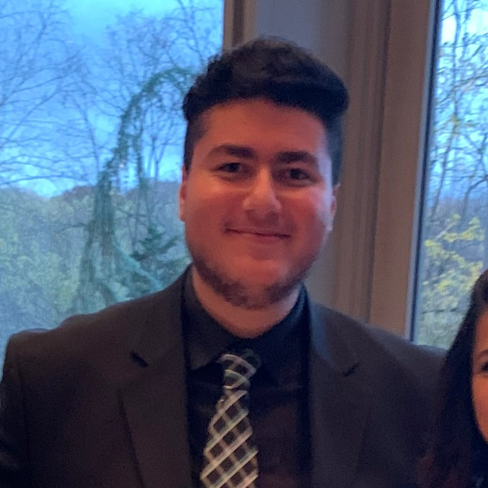

Edward Rizkalla
Student Producer for CNS-TV MD

erizkal3@terpmail.umd.edu
LinkedIn: https://www.linkedin.com/in/edward-rizkalla-57988025a/
X: https://x.com/Eddy_Rizkalla
GitHub: https://github.com/erizkal3/Edward-Rizkalla-Jour352
Experience
Capital News Service
Fall 2024
Advanced Studio Production Course
Philip Merrill College of Journalism - University of Maryland
Fall 2023
In this course, I learned every production aspect related to studio production and worked as production support for news, live sports, and video game news shows; I gained knowledge of streaming concepts and software and worked collaboratively in teams to execute content and shows well.
Production Utility for XFL games - ESPN
Washington, D.C.
Spring 2023
Sport Globalization Course - NBA Africa
Kigali, Rwanda and Dakar, Senegal
Skills
Education